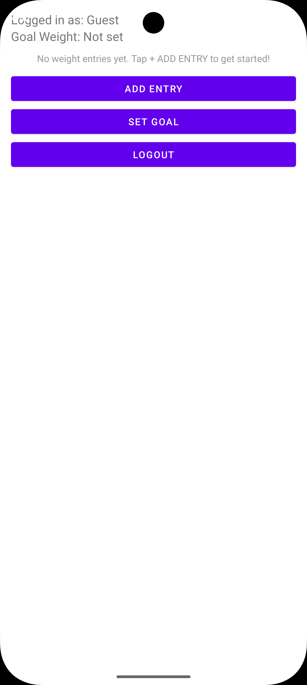
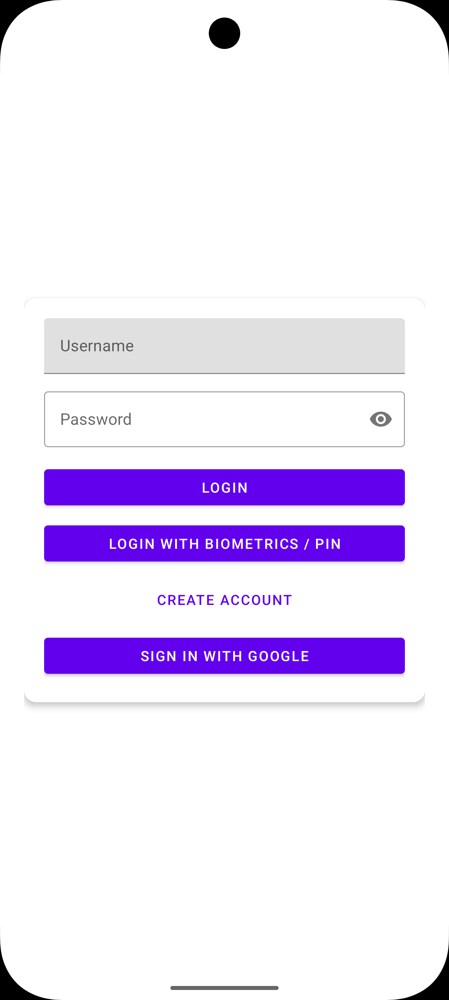
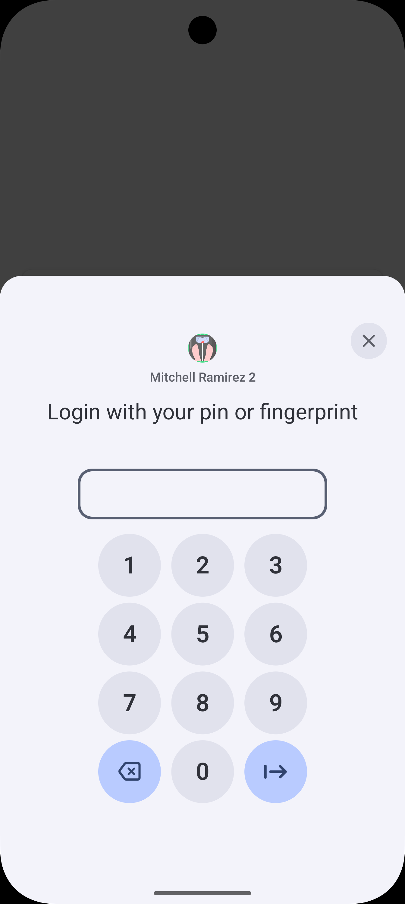
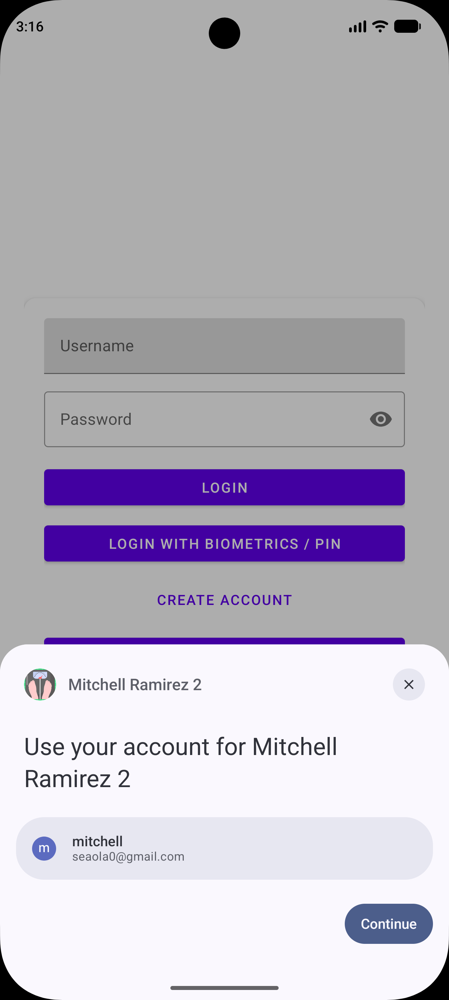
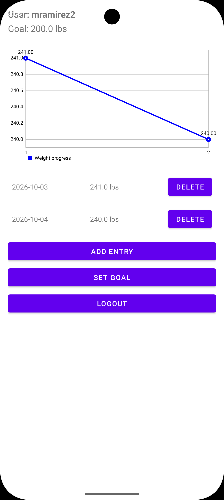

I begun my journey for a Bachelor’s in Computer Science at the end of 2024 after discussing with my then-wife that I wanted to get my education to proceed further on in life and explore better opportunities since I was getting tired of being a computer technician. I felt like I was destined for something better, so that’s why I decided to pursue further in my education career. After started off with IT 140, Introduction to Scripting, I wanted to learn more Python and programming languages in general. Afterwards, I went on to CS-210, Programming Languages or Object Oriented Programming, and learned more about JavaScript. At the time, it felt like it wasn’t for me, but I stuck through it. It was not until I got to Mobile Development earlier this year where I felt like I wanted to do: mobile development; or rather, learning Java/JavaScript for programming. From my coursework that I previously taken, I have developed the skill-set for Python and JavaScript; also learned about becoming a project lead and creating narratives to present the team’s projects for the stakeholders; and learned about graphic design in the process. Throughout my entire tenure at SNHU, I felt like I found a purpose in my life and what I actually want to do for career and life.
My computer science major encompasses variety of things such as algorithms, Cybersecurity, and developing more critical-thinking skills to help me become a better programmer and attributed towards my growth. From here, I took classes that involved app development and mobile programming (IT-145 and CS-360 respectfully). For my capstone, I wanted to continue on with my project that I had from my CS-360 class which was a WeightTracking application. I felt like this application could be improved since then, I just wanted to get the project done and out of the way. This time around, I took the time to develop the skills for the artifacts that were needed to be done: software design and engineering, data structures and algorithms, and the database.
The software design artifact demonstrated my ability to taking into consideration of how a user will use my application and how they might say when they use it. I wanted to design something minimal and sleek; instead of having multiple features and give me “scope creep”. I developed a hindsight to just keep it simple and instead of keep adding new features when I just need to publish my application and worry about the features later.
The data structures and algorithms artifact displayed my knowledge for Java and JavaScript to redo the codebase that I had previously and make it modernized and adhering to Google’s standards for developing an Android application.
Lastly, the database artifact showed my security mindset by salting the passwords and using SQLite for the persistent storage of the user’s account and showed my knowledge of database architecture, data management, mapping, and local data. I used my previous class of CS-340 and used CRUD for optimizing database queries.
The artifact that I had selected was changed from the original idea that I had going for. This artifact that I had chosen now was from my CS-360 class which was Mobile Development and was created earlier this year of 2026. During that time, I was barely getting back into JavaScript since I had previously learned it from an earlier class and thankfully, learning JavaScript has been a lot of fun and with using Android Studio, it has been a lot easier to create this weight-loss application that was extremely simplistic: no graphics, no fingerprint sensor, and to me, was not visually appealing. All you can do in this application is inputting your goal weight, log weight for the day, and when you reach your goal weight, it will send you a SMS text. Upon learning more about Android development, the SMSPermission was primitive and did not adhere to modern Android standards which were replacing the old SMSPermission and completely re-write to fit.
When I began working with SMSPermission.java, I realized that I had the old permission schema from a previous Android version. I believe it was less than Android 12, but I was trying to target Android SDK 34. I was using a legacy requestPermission with ‘ActivityCompat.requestPermissions’ and the override of ‘onRequestPermissionsResult’ which was not ideal for Android SDK 35. I had to look up what the correct way to implement this SMS permission is by adding R.id for the variables. In my case, I would use R.id.tvPermissionStatus to implement the permission for SMS for the user to receive the prompt to either allow or deny the permission; and add the R.id.btnAllowSMS for the button prompt to show up for the user as well. On top of that, I needed to include a way for the user to opt out of the notifications as well in case it becomes too obtrusive for them.
Within my MainActivity.java as well, I have implemented a way for the user to use their fingerprint or their pin to login within the application. As of right now, the implementation of the fingerprint and pin is only tied to the guest account and not to the account that I have within the application. I will need to figure that out in the future, but as of right now, it is working with a pin. As for the login with Google, I will include the way to get the API token from Google to be included with the application, but the button is there and since this is still a work in progress, I will need to troubleshoot and figure out how to get the web token to be included for the application.
For the enhancements that I have set forth for myself, I believe the only thing that is missing is creating a visualizer or a graph so that the user can see the starting weight and their goal weight with the different weights that they had inputted themselves to keep them engaged for their weight-loss goal. The next enhancements that I will be doing is locking down the database using JBCrypt and improving the visuals and performance of the application.


For this milestone, I wanted to implement a better codebase where it adheres to Google’s modern standards, including a button login into the application with Google, and created a visualizer that the user can see upon logging in. After combing through the MainActivity like I did last week, I went through WeightTracking.java and made changes that finding shows the weight in descending order from the oldest to newest by changing the SQLite database ORDER BY from “DESC” to “ASC”. From that change alone changed was what I wanted to in the first place and it does make my application look a lot more professional. From there, I wanted to add a visualizer for the user to show a little graph for them to see what their starting weight was, their current weight, and the goal weight for the user to see how much further they need to do to reach their goal.
I also wanted to include a Google Login, but it is giving me trouble with trying to link the web client that I have set up with Google Developers to be linked to the application. As of right now, it is broken, but I am still actively working on it to get it completed. Although, I looked into Firebase, which is still a Google product, led me closer to complete this task, but when I included Firebase, the button is not crashing the application which will be completed. Upon learning more about trying to include an option to allow the user to sign-in with Google, it helped me gained a lot of experience of trial-and-error and sometimes brute forcing things to get it to work. I also included a biometric section that the user can use their pin and/or fingerprint to log in and that has been very inconsistent. I had a fingerprint and pin set up for the emulator and it does not show it as of now, but I will look into it further to get it completed.
When creating the visualizer for the weight tracking, it was all the same as including the buttons for the “add entry”, “set goal”, “logout”, I needed to look up online for a line chart visualizer. The one that I had selected to use was from the framework for layouts from the creator Phillip Jahoda who had the chart included, but I needed to create the view for it to be shown. Looking back from creating the buttons, it was all downhill from there where I needed to link the buttons together with the android ID’s and make sure that it was compatible with each other and not clashing.
Upon reflecting the enhancement for this artifact that I had chosen of including the Google Login, implementing the fingerprint sensor function, and having a visualizer for the weight changes, this has helped me a lot of thinking for what the user might experience when using my application; instead of using the application for me and being selfish. I believe that having too many ideas can be detrimental for the development of the application where you keep thinking of different things that can be included for it and start to develop a scope creep where it just keeps piling and piling on top. I learned that doing increments and taking ideas from different applications and seeing what are retaining their users helped me strengthen the mindset and doing smaller updates instead of bigger updates will help me to become a better developer and learn to take in criticism thus allowing me to improve myself.

For this week enhancement, I needed to develop my skill with databases. For my weight-tracking application, I had a .java class file called “DatabaseHelper” which serves are my manager for my application. It uses SQLite to manage the persistent storage while handling the user account management, hashing of passwords, goal setting, and time-series log records. I had selected this artifact to demonstrate the foundational full-stack mobile development concepts, which includes the database architecture, data management, data mapping, and local data persistence.
How does this showcase my development skills? I first defined structured tables with users and weight_entries, managing foreign key constraints, and indexing for optimizing chronological queries with CRUD. I also improved the security by using the practices of salting the passwords with PBKDF2WithHmacSHA256 and using constant-time string comparisons to prevent timing attacks. Lastly, I also enhanced the data integrity and memory management by utilizing the explicit foreign key cascade (ON DELETE CASCADE) to maintain the integrity, on top of that, I also used array wiping to prevent sensitive credentials from lingering in the memory.
This artifact was improved from when I originally started by resolving a critical issue where it hashed passwords that was stored as formatted arrays instead of Base64 Strings, which caused the authentication of the user to fail when parsing credentials. I also optimized the query index when the User ID and entry date are parsed upon loading the user progress histories. Finally, I also reinforced parameter sensitization of the SQLite queries using (?) selection arguments by doing so, prevented SQL injection vulnerabilities.
I believe I had met the course outcomes of “Develop a security mindset that anticipates adversarial exploits…” by including PBKDF2 with SHA256 encryption and enhancing the data integrity with cascading and wiping with the arrays, so that they would not be stuck in memory. I also believed that I secured the data storage, included proper software design patterns, and application performance optimizations.
From what I learned from this is the importance of consistency between data serialization and deserialization formats, for example, matching the base64 encoding with the decoding at read-time. I also learned how cryptography algorithms such as PBKDF2 work under the hood and using a high iteration count are vital to prevent brute-force attacks. Finally, I learned the techniques for memory management safety in Java when handling the sensitive data when clearing the primitive arrays that contains the raw key material.
The challenges that I had faced was implementing these changes, and making changes to the MainActivity.java, and also implementing the Google Login. I had finally figured out that Google Login and when doing so, it broke the graph where it displays the user’s weight tracked. I fixed that by updating the chart object in WeightTracking.java and when it refreshed the graph, it displayed after implementing List
